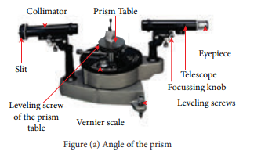
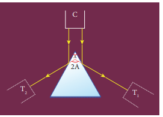
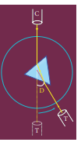

To determine the refractive index of the material of a prism using spectrometer.
Spectrometer, prism, prism clamp, sodium vapour lamp, spirit level.
mew equal to sin into a plus d by two divided by sin into a by two
where, mew gives Refractive index of the material of the prism (No unit)
A gives Angle of the prism (degree)
D gives Angle of minimum deviation (degree)


Figure (b) Angle of the prism

Figure (c) Angle of minimum deviation
1) Initial adjustments of the spectrometer
• Eye-piece: The eye-piece of the telescope is adjusted so that the cross-wires are seen clearly.
• Slit: The slit of the collimator is adjusted such that it is very thin and vertical.
• Base of the spectrometer: The base of the spectrometer is adjusted to be horizontal using leveling screws.
• Telescope: The telescope is turned towards a distant object and is adjusted till the clear inverted image of the distant object is seen. Now the telescope is adjusted to receive parallel rays.
• Collimator: The telescope is brought in line with the collimator. Collimator is adjusted until a clear image of the slit is seen in the telescope. Now the collimator gives parallel rays.
• Prism table: Using a spirit level, the prism table is adjusted to be horizontal with the three leveling screws provided in the prism table.
2) Determination of angle of the prism (A)
• The slit is illuminated by yellow light from sodium vapour lamp.
• The given equilateral prism is placed on the prism table in such a way that refracting edge of the prism is facing the collimator.
• The light emerging from the collimator is incident on both reflecting faces of the prism and is reflected.
• The telescope is rotated towards left to obtain reflected image of the slit from face 1 of the prism and is fixed.
• Using tangential screws, the telescope is adjusted until the vertical cross-wire coincides with the reflected image of the slit.
• The main scale reading and vernier coincidence are noted from both vernier scales.
• The telescope is now rotated towards right to obtain the reflected image from face 2 of the prism. As before, the readings are taken.
• The difference between the two readings gives 2A from which the angle of the prism A is calculated.
3) Determination of angle of minimum deviation (D)
• The prism table is rotated such that the light emerging from the collimator is incident on one of the refracting faces of the prism, gets refracted and emerges out from the other refracting face.
• The telescope is turned to view the refracted image.
• Looking through the telescope, the prism table is rotated in such a direction that the image moves towards the direct ray
• At one particular position, the refracted ray begins to retrace its path. The position where the refracted image returns is the position of minimum deviation.
• The telescope is fixed in this position and is adjusted until the vertical cross-wire coincides with the refracted image of the slit.
• The readings are taken from both vernier scales.
• The prism is now removed and the telescope is rotated to obtain the direct ray image and the readings are taken.
• The readings are tabulated and the difference between these two readings gives the angle of minimum deviation D.
• From the values of A and D, the refractive index of the material of the glass prism is determined
Least count
1 M S D equal to 30 dash
Number of vernier scale divisions equal to 30
For spectrometer, 30 vernier scale divisions will cover 29 main scale divisions.
∴ 30 V, S, D equal to 29 M, S, D
Or 1 V, S, D equal to 29 by 30 M, S, D
Least count
(L C) equal to 1 M, S, D minus 1 V, S, D
equal to (1 by 3) MSD equal to (1 by 3) | into 30 dash equal to 1 dash
Table 1 To find the angle of the prism (A)
Image |
Vernier A (Degree) |
Vernier B (Degree) |
|||||
|
M S R |
V S C |
TR |
M S R |
V S C |
T R |
|
Reflected image from face 1 |
|
|
|
|
|
|
|
Reflected image from face 2 |
|
|
|
|
|
|
|
Difference 2 A |
|
|
|
|
|
|
|
Mean 2 A equal to
Mean A equal to
Table 2 To find the angle of minimum deviation (D)
Image |
Vernier A (Degree) |
Vernier B (Degree) |
||||||
|
M S R |
V S C |
T R |
M S R |
V S C |
T R |
||
Refracted image |
|
|
|
|
|
|
||
Direct image |
|
|
|
|
|
|
||
Direct image |
|
|
|
|
|
|
||
Mean D equal to
mew equal to sin into a plus d by two divided by sin into a by two
1. Angle of the Prism (A) equal to dase (degree)
2. Angle of the minimum deviation of the prism (D) equal to dase (degree)
3. Refractive index of the material of the Prism (μ) equal to dase (No unit)
Note:
1) Once initial adjustments are done, spectrometer should not be disturbed.
2) Total reading T R equal to M S R plus (V S C into L C)
Where
M S R gives Main Scale Reading
V S C gives Vernier Scale Coincidence
L C gives Least count (equal to 1 dash)